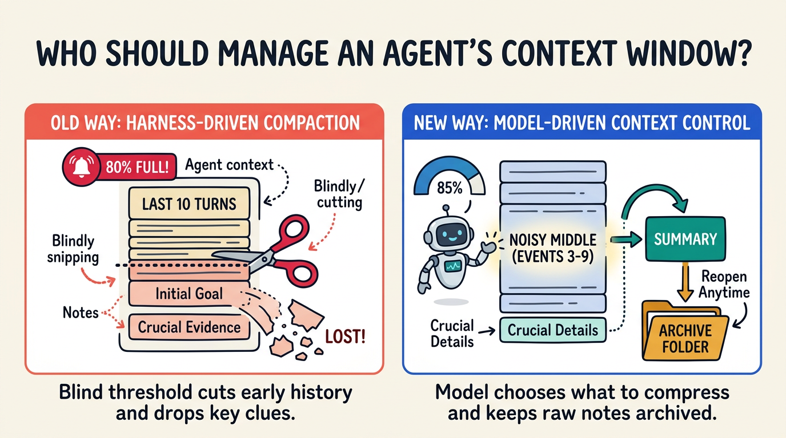
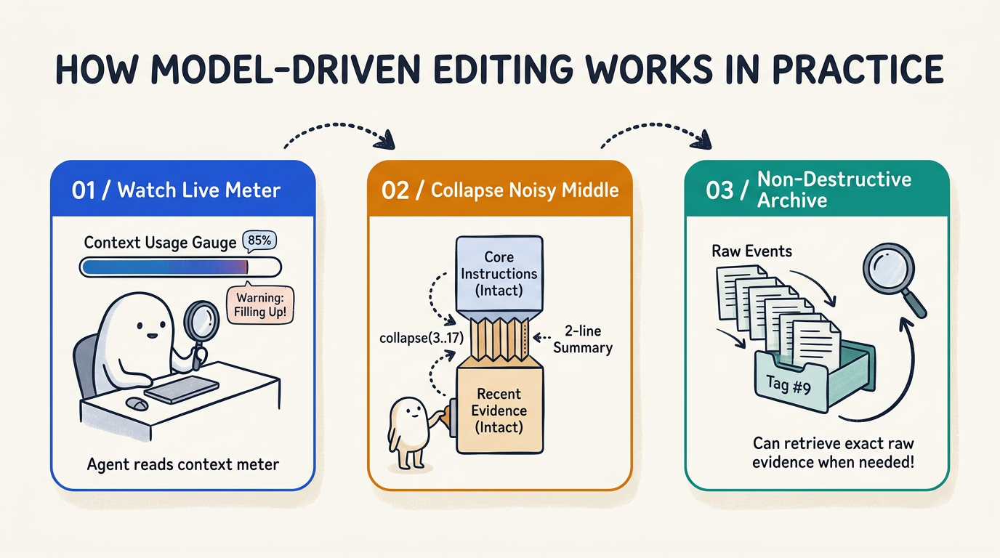
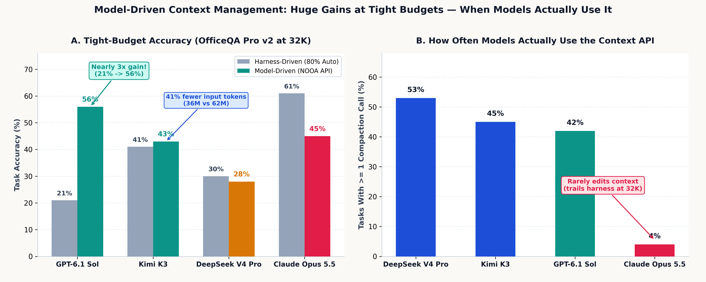
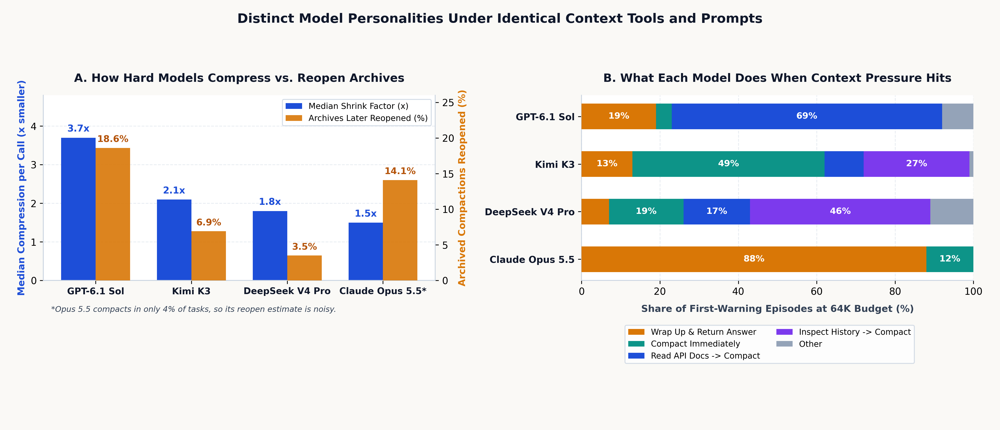
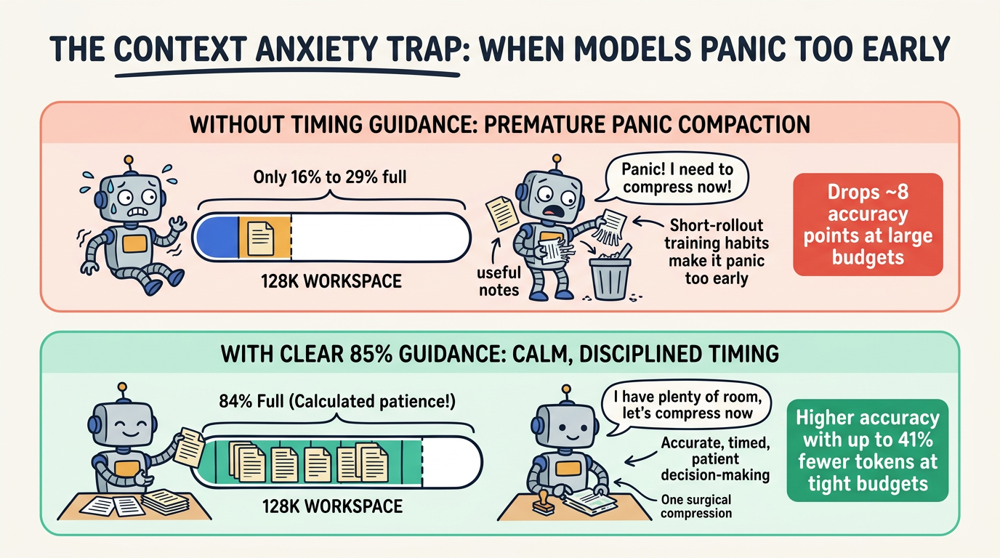
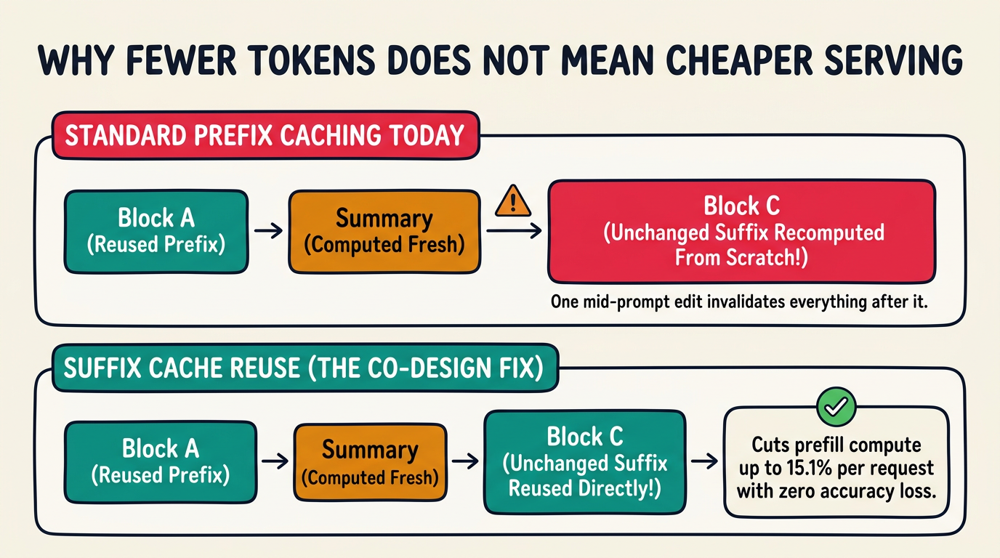
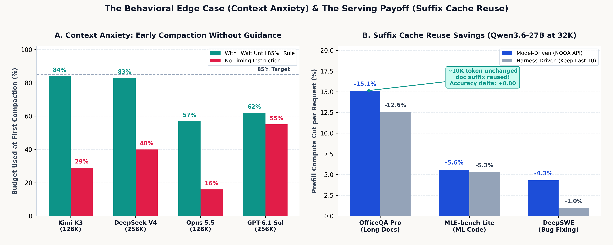
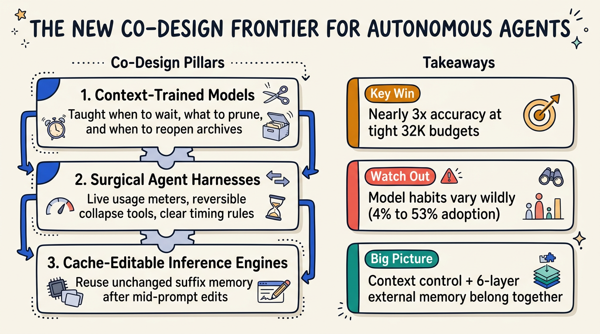

Letting Models Manage Their Own Context: A Deep Review of NVIDIA’s New NOOA Study
Handing context compaction directly to frontier models nearly triples tight-budget accuracy — yet also exposes bizarre model personalities, "Context Anxiety," and a hidden serving-engine cache trap. Here is what NVIDIA’s November 2026 study actually proves (and where the hard open problems remain).
Authors: Alessio Devoto, Avinash Vem, Tara Safavi, Sanjay Kariyappa, Yu-Hsuan Tseng, Paul Furgale, and Ricardo Silveira Cabral (NVIDIA)
Core Question: Instead of an agent harness blindly summarizing history when a window hits 80% full, what happens when we give the model a clean API to edit its own context — and what happens down inside the inference engine when it does?
Reviewer Verdict: Must-read empirical benchmark for agent builders. Rare in 2026 because it refuses to cherry-pick a single model, uncovers counterintuitive failure modes like Context Anxiety, and bridges high-level agent ergonomics all the way down to SGLang attention-cache physics.
Every engineer building long-running AI agents eventually collides with the same silent enemy: context rot. As an agent searches documents, runs code, reads stack traces, and inspects tool outputs over dozens of turns, its prompt balloons. Long before you hit a hard token ceiling, signal gets buried under old tool dumps and reasoning quality quietly degrades.
Today’s default solution across almost every agent framework is what NVIDIA’s authors call harness-driven context management. When token usage crosses a fixed threshold (say, 80% of the window), the surrounding harness pauses the agent, asks a model to summarize the older portion of the history, keeps the initial instructions plus the most recent 10 events verbatim, and resumes.
It is dead simple. It is also fundamentally blind. A rigid threshold heuristic has no idea whether event #4 contains a crucial regulatory footnote that solves the entire task while events #12 through #18 are dead-end terminal logs.
In Letting Models Manage Their Own Context: Where We Stand, NVIDIA’s team tests the obvious next step inside NOOA (their open-source Python agent harness): give frontier models a live context meter and a reversible Python API so the model itself chooses when and what to compact—and then measure both task performance and GPU serving economics across four frontier models.
The big revelation of this paper isn’t simply "models can edit their own context." It is that giving models edit control turns context management into a three-way co-design problem across the model, the harness, and the serving engine.
1. The Architectural Shift
From Blind Harness Scissors to Reversible Self-Editing

One of the cleanest engineering decisions in the paper is how deliberately minimal NOOA’s context interface is. Rather than inventing a complex memory query language, the authors expose just two Python operations alongside a live context-usage indicator and a context-pressure warning:
# 1. Collapse a noisy middle range of events into a crisp summary; returns tag "3..17"
summary_tag = self.events.collapse(
"3", "17",
summary_text="Explored the repo layout; unit tests live in tests/unit."
)
# 2. Non-destructive archive: originals are never deleted — reopen any event by tag!
original_event = self.events["9"]
self.events["9"]), models can prune boldly without permanently burning bridges.
Notice how subtle and important that second line is. Traditional harness compaction is lossy and one-way: once a summary replaces raw tool output, any dropped figure is gone forever. Making compaction reversible by tag fundamentally changes the risk calculus for an agent—and as we will see in Section 3, the highest-scoring model takes full advantage of reopening archived events!
How the Authors Stress-Tested Both Strategies
To avoid cherry-picking toy scenarios, the team ran head-to-head sweeps across context budgets from 8K up to 512K tokens (each budget enforced as a hard ceiling; if a request overflows, a fallback drops oldest events and three failures mark the task wrong) on two contrasting benchmarks:
- OfficeQA Pro v2 (90 enterprise research questions): Deep document lookup over U.S. federal receipts and expenditures. Reading long pre-parsed tables fills the window rapidly, creating intense context pressure (the ratio of evidence needed to available window size).
- MLE-bench Lite (22 Kaggle machine learning competitions): Dataset inspection, coding, debugging, and iterative submissions—real software-engineering loops, but naturally much lighter on raw context volume.
They evaluated four frontier models under identical APIs and instructions (including a default rule telling the model to consider compacting once usage reaches 85%): GPT-6.1 Sol, Kimi K3, DeepSeek V4 Pro, and Claude Opus 5.5.
2. The Payoff
Tight Budgets Unlock Massive Gains — When Models Actually Use the Tool

The headline numbers on OfficeQA Pro v2 are striking—and refreshingly nuanced:
- GPT-6.1 Sol nearly triples its score at 32K (21% → 56%): Under heavy document pressure, blind 80% harness compaction shreds critical federal tables at the worst possible moment. Letting GPT-6.1 Sol curate its own workspace raises pass rate by +35 percentage points—and keeps it ahead at 16K and 64K before both strategies converge at 128K–512K.
- Kimi K3 pushes the efficiency frontier: At 32K, Kimi nudges accuracy up (43% vs. 41%) while processing 41% fewer cumulative input tokens (36M vs. 62M across the run). At 64K, it wins on both axes cleanly—scoring 57% vs. 52% with 11% fewer cumulative tokens.
- The tight-budget rule holds on MLE-bench Lite too: Because Kaggle coding scripts occupy far less context than huge financial reports, harness-driven and model-driven lines track closely across most budgets, showing gains mainly at the tightest 8K–16K ceilings.
- Claude Opus 5.5 reveals the catch: At 16K and 32K on OfficeQA Pro v2, model-driven Opus 5.5 actually scores worse than harness compaction (~20% vs. ~45% at 16K; ~45% vs. ~61% at 32K). Why? Panel B explains it in one glance: Opus 5.5 calls the context API in only 4% of tasks, compared with 42%–53% for GPT, Kimi, and DeepSeek. When the harness steps back and the model refuses to step up, the window simply slams into the hard ceiling.
3. Behavioral Forensics
Same Context API, Four Completely Different Model Personalities
Section 5 of the paper is my favorite part of the entire study. Instead of stopping at leaderboard averages, the authors trace how each model behaves when handed the exact same tools and hit with the exact same context-pressure warning at 64K. The behavioral divergence is astonishing:

- GPT-6.1 Sol — The Bold Archivist: Reads the API documentation first in 69% of pressure episodes to make sure it uses the tool cleanly, then compacts aggressively—shrinking the prompt by a median of 3.7× per call! Crucially, because NOOA archives originals non-destructively, GPT isn’t afraid to prune hard: it calmly reopens archived events after 18.6% (~1 in 5) of its compactions whenever it needs an exact detail back.
- Kimi K3 — The Fast Minimalist: Acts immediately—compacting straight away in 49% of pressure episodes (and inspecting history first in 27%), trimming prompts by a median of 2.1× and rarely looking back (only 6.9% archive reopens).
- DeepSeek V4 Pro — The Cautious Auditor: Uses the API most frequently overall (53% of tasks), inspects its own event history first in 46% of pressure episodes, trims conservatively (1.8× median), and almost never reopens archives (3.5%).
- Claude Opus 5.5 — The Early Finisher: When the 64K context-pressure warning fires, Opus wraps up and returns a final answer in 88% of episodes rather than compacting and continuing its investigation! Only 12% of the time does it compact right away.
This finding is a wake-up call for anyone assuming context management is "just a prompt tweak." The authors rightly point out that working inside a harness that auto-compacts does not teach a model how to self-compact. They conjecture—carefully labeling it an untested hypothesis—that OpenAI’s investment in experimental context-management tools inside Codex may explain why GPT-6.1 Sol looks natively comfortable reading docs, pruning 3.7×, and treating archived events like paged virtual memory.
4. The Behavioral Trap
"Context Anxiety": When Models Panic and Shred Useful Work Way Too Early

Section 6 introduces one of the sharpest diagnostic concepts in recent agent research: Context Anxiety (extending prior work by Igbinedion et al., 2026). Even models that enthusiastically use the context API often misjudge—or prematurely panic about—their remaining workspace.
In the baseline model-driven runs, NOOA’s system prompt included a simple timing guardrail: consider compacting only once usage reaches 85%. When the authors removed that single timing instruction, model behavior shifted dramatically (Figure 6, left panel):
- Kimi K3 (at 128K): Median context used at first compaction collapsed from ~84% down to 29% (and all the way down to ~10% at 512K!).
- DeepSeek V4 Pro (at 256K): Dropped from 83% down to 40% (~21% at 512K).
- Claude Opus 5.5 (at 128K): Ironically, removing the 85% instruction caused Opus to compact far more often—and aggressively early, at a median of just 16% of its budget!
- GPT-6.1 Sol: Remained notably steadier (62% → 55% at 256K), again suggesting deeper calibration around context capacity.
The authors connect this directly to training incentives: Kimi K3’s technical report documents "Reasoning Effort RL" that applies a −1 reward penalty whenever trajectories exceed a per-problem token budget. Optimizing models for short rollouts during reinforcement learning inadvertently trains a reflexive token-frugality habit that misfires when plenty of context space is actually available.
5. The Serving Reality Check
Why Fewer Tokens Doesn’t Automatically Equal Cheaper Inference
If you stopped reading at Section 6, you might walk away thinking: "Awesome—Kimi used 41% fewer input tokens, so my inference bill drops 41%!"
Not so fast. Section 7 delivers the paper’s most important systems-engineering reality check—one that almost every application-layer agent benchmark overlooks.

B—forcing the GPU to re-prefill the entire unchanged suffix C from scratch.
Modern inference engines like vLLM and SGLang stay fast and affordable using automatic prefix caching: if turn N+1 starts with the exact same token prefix as turn N, the GPU reuses the previously computed Key-Value (KV) attention tensors instead of running expensive prefill compute again.
Now watch what happens when an agent calls self.events.collapse("3", "17") in the middle of a prompt [A | B | C]:
- Block
A(system instructions + early task context) stays unchanged → prefix cache hit. - Block
Bshrinks into a shortSummary→ must be computed fresh (cheap). - Block
C(thousands of tokens of recently retrieved documents and recent turns) didn’t change a single character—yet because it now sits after an edit, standard prefix caching invalidates it completely and forces full GPU recomputation!
Building on recent cache-editing research—NVIDIA’s SideQuest (Kariyappa & Suh, 2026), Context Language Models (Shao et al., 2026), and Cache Engineering for Agents (Fu et al., 2026)—the authors wired NOOA’s context API into a Suffix KV Cache Reuse prototype inside SGLang running Qwen3.6-27B at a 32K context window. Instead of recomputing unchanged suffix C, the engine reuses its cached KV states directly as a serving approximation.

Look at Panel B of Figure 7—two details jump right off the chart:
- Document-heavy agents reap the biggest serving payoff: On OfficeQA Pro, suffix KV reuse cuts prefill compute by 15.1% ± 0.8% per request under model-driven editing (vs. 12.6% ± 0.7% under harness compaction), with a task score delta of literally +0.000 ± 0.02. Why is OfficeQA so dramatic? Because retained suffixes after a middle edit average ~10K tokens (~60% of the prompt) due to long retrieved documents remaining active in context.
- Modest but real gains on coding workloads: On MLE-bench Lite (−5.6% ± 1.1%, reward delta −0.011 ± 0.03) and DeepSWE (−4.3% ± 0.3%, reward delta +0.013 ± 0.02), savings are smaller because retained suffixes are shorter—yet model-driven editing still beats harness compaction across every single benchmark (especially DeepSWE: 4.3% vs. 1.0%).
6. Critical Review
What This Paper Nails — And Four Important Caveats to Keep in Mind
A good paper review shouldn’t just echo the abstract. Here is a candid architectural critique of what Devoto et al. got brilliantly right, alongside the real limitations practitioners must factor in before redesigning their stack.
What the Authors Got Right
- Refreshingly honest cross-model evaluation: Rather than claiming universal magic, the authors show where model-driven editing fails (Claude Opus 5.5 at tight budgets), where it stalls (low-pressure MLE-bench runs), and where prompt sensitivity bites (Context Anxiety costing ~8 points).
- Reversible compaction as a first-class primitive: Showing that GPT-6.1 Sol reopens 18.6% of its compacted archives proves a deep design principle—aggressive summarization only works safely when paired with lossless, tag-addressable recall.
- Connecting agent APIs to serving-engine reality: Most agent papers stop at "token count." Measuring prefix-cache invalidation and prototyping suffix KV reuse inside SGLang moves the conversation from prompt-engineering folklore to real distributed-systems economics.
Four Limitations & Open Engineering Questions
- Small benchmark footprints & simulated pressure: As the authors transparently acknowledge in Section 8, 90 questions (OfficeQA Pro v2) and 22 competitions (MLE-bench Lite) leave wide variance bars on smaller deltas. Moreover, artificially shrinking the context ceiling to 16K–32K with a hard oldest-event-drop fallback emulates token pressure, not every subtlety of truly multi-day tasks (such as shifting goals or external state changes).
- Prefill compute ≠ end-to-end latency or GPU dollar cost (yet): Suffix KV reuse was tested on a single 27B dense model (
Qwen3.6-27B) in one prototype engine, measuring prefill tokens saved rather than real wall-clock time-to-first-token, KV-cache memory fragmentation, or batch-scheduling overhead under multi-tenant production traffic. - Approximate attention drift under chained edits remains untested at extreme depth: Reusing suffix KV states after changing the tokens before them is an approximation—suffix tokens never re-attend to the new summary text, and positional encodings must be carefully shifted or handled. It passed cleanly here on 32K tasks, but how well does that approximation hold after 15 consecutive mid-prompt edits in a 256K workflow? That remains an open research question.
- In-window context editing is only half of agent memory: Model-driven compaction governs what stays visible inside the active inference window during one task trajectory. It does not replace out-of-band external memory governance—such as synchronizing the 91% of state changes happening outside chat, keeping living incident ledgers updated in place, or date-stamping changing policies across months. The strongest production architectures will combine model-driven in-window context control with lifecycle-governed external memory layers.
7. The Takeaway
The New Co-Design Frontier — And What You Should Ship Today

The lasting contribution of Letting Models Manage Their Own Context is naming the next layer of competitive differentiation in AI infrastructure. For the past two years, model labs optimized reasoning weights, application teams wrote wrapper harnesses, and serving teams optimized static prefix caching—all in separate silos.
Once an agent starts actively curating its own prompt mid-trajectory, those three silos collapse into one system. Models need post-training that teaches calibrated compaction without Context Anxiety; harnesses need reversible, tag-indexed context primitives; and inference engines need first-class KV cache editing so trimming context saves real GPU cycles instead of triggering cache thrashing.
Key Takeaways
Key Takeaways — Four Practical Rules for Agent Builders
- Make every compaction reversible by ID/tag. Never destroy raw tool outputs during compaction. Archive them behind a lightweight lookup call (like
events[tag]) so capable models can compress boldly and recover exact facts when needed. - Always include an explicit timing threshold (e.g., 85%) + live usage meter. Leaving timing open-ended invites Context Anxiety—causing models like Kimi K3, DeepSeek V4, and Opus 5.5 to panic-prune at 16%–40% utilization and sacrifice ~8 accuracy points.
- Keep a harness safety net—especially across heterogeneous model routers. Because model adoption ranges from 53% down to 4%, never delete your harness-driven fallback until you have empirically verified your target model actually calls your context API under pressure.
- Measure cache hit rate, not just token count, when evaluating compaction. A mid-prompt edit that cuts 30% of tokens while invalidating a 60% unchanged suffix can silently increase prefill compute until your serving layer supports suffix cache reuse.
We are watching agent context evolve the exact same way computer memory evolved decades ago—from fixed flat buffers, to crude operating-system swapping, to hardware-assisted virtual memory co-designed with compilers and CPUs. NVIDIA’s NOOA study is an early, crystal-clear field report from that exact inflection point.
Primary Source: Alessio Devoto et al. (NVIDIA), "Letting Models Manage Their Own Context: Where We Stand" (arXiv:2611.34147v1, Nov 25, 2026). For how in-window context control pairs with external memory lifecycles, see my companion guides: Guide to Memory in AI Agents and The 6 Layers of Agentic Memory.
About the Author
I’m Saurabh, and I build production agentic systems. This review is grounded in real-world experience implementing memory and context management in multi-user AI applications, including healthcare, finance, and e-commerce use cases.
If you found this helpful, please:
- ⭐ Star the GitHub repository
- 💬 Share your memory and context engineering experiences in the comments
Building something with agent memory or long-horizon context management? I’d love to hear about your use case and challenges!